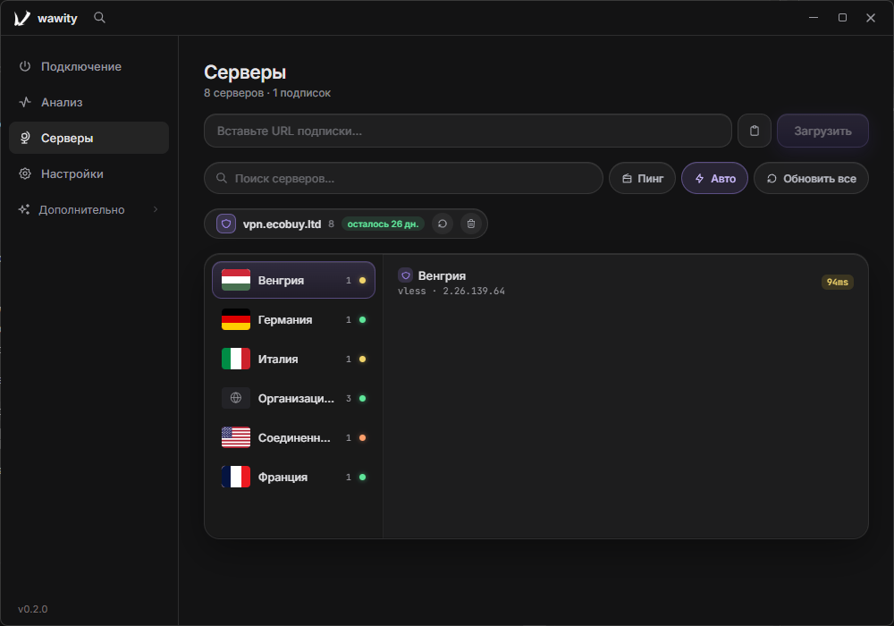
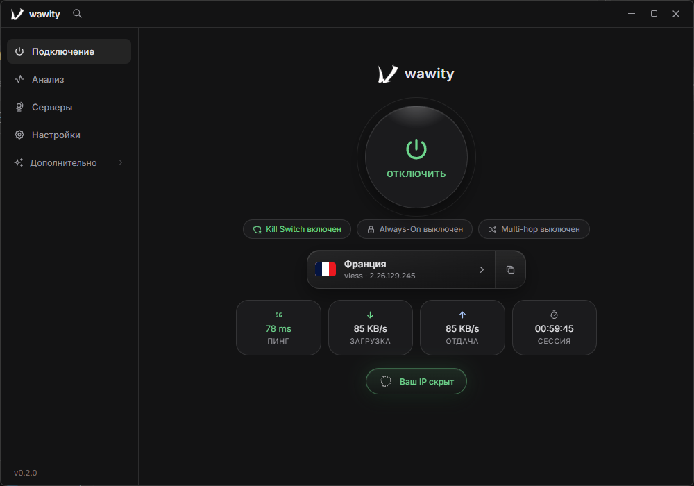

reachability
Серверы отвечают сразу
Reachability простукивает каждый узел подписки, пока ты выбираешь, куда подключаться. Молчащие видно сразу.
5 из 5 узлов отвечают
Игровой трафик идёт в обход туннеля и получает приоритет прямо в роутере. Античиты видят обычную сеть. Kill switch живёт в файрволе Windows — а не в обещаниях приложения.
холодный старт клиента — быстрее, чем запускается лаунчер игры
установщик целиком. Нативный Rust — без Electron и его зависимостей
современных протоколов из одной ссылки подписки — без ручных конфигов
возможности
Никаких «игровых режимов» из маркетинга — только системные механизмы Windows, которые реально влияют на задержку и безопасность.
Игровой трафик выходит наружу напрямую, минуя туннель, и помечается DSCP 46 — очередь роутера начинает играть на твоей стороне. BattlEye и EAC не видят ничего подозрительного.


Правила живут в Windows Firewall: BLOCK всему, ALLOW только туннелю. Убей процесс из диспетчера задач — трафик всё равно никуда не уйдёт.
Весь список подписки пингуется параллельно за пару секунд. Видно, где меньше задержка — или доверься авто-выбору.
Живые графики скорости и задержки, список приложений в туннеле и QoS-приоритеты — на одном экране.
Аккаунтов и облака нет. Статистика использования выключена по умолчанию и не содержит IP, истории или содержимого трафика — включается одним тумблером.
Steam, Epic, Riot и Battle.net сканируются автоматически — найденные игры и античиты выводятся в обход туннеля одним списком.


kill switch
Kill switch живёт в Windows Firewall, а не в процессе клиента. Ниже — реальный сценарий обрыва, секунда за секундой, командами, которые его обеспечивают. Клиент можно убить из диспетчера задач — защита останется.
шаг 01 · вооружение
Правила ставятся при первом запуске и живут в ActiveStore — вне процесса клиента. Весь исходящий трафик блокируется, разрешение есть только у туннеля.
$ netsh advfirewall firewall add rule ` name="wawity · deny all" dir=out action=block $ netsh advfirewall firewall add rule ` name="wawity · allow tun" dir=out action=allow ` program="...\wawity\tun.exe" Ok.
шаг 02 · обрыв
Wi-Fi пропал — реагировать нечему и незачем: правила уже стоят. Пакеты наружу не уходят, приложения об этом даже не узнают.
$ Get-NetFirewallRule wawity-* ` -PolicyStore ActiveStore Name Enabled Action wawity · deny all True Block wawity · allow tun True Allow
шаг 03 · проверка на прочность
Самая честная проверка kill switch — диспетчер задач. Правила привязаны к файрволу, а не к процессу: пока маршруты не откатятся, наружу не уйдёт ничего.
$ taskkill /F /IM wawity.exe SUCCESS: процесс завершён. $ netsh wfp show filters … wawity: 4 filters · policy persists
шаг 04 · возврат
Туннель поднят, временные правила смыты, маршруты возвращены. Интернет не «теряется» молча — ни на одну секунду.
$ wawity reconnect --auto handshake 0.8s · Frankfurt №4 · 23ms $ netsh advfirewall firewall delete rule ` name="wawity · deny all" Deleted.
extra-хаб · new в 0.2.1
Весь набор диагностики теперь живёт прямо в клиенте: от замера скорости и поиска утечек до бенчмарка резолверов, пульса нод, аудита портов и готовых сниппетов починки. У каждого инструмента — раскрывающийся блок «Как это работает».
Reachability простукивает каждый узел подписки, пока ты выбираешь, куда подключаться. Молчащие видно сразу.
5 из 5 узлов отвечают
Замер загрузки и отдачи через Cloudflare — прямо через туннель, без сторонних сайтов и рекламы.
Leaks проверяет DNS и IP: весь трафик идёт строго через туннель — и это проверяется в один клик.
Cloudflare, Google, Quad9, AdGuard и твой собственный DoH замеряются через текущий маршрут — с учётом туннеля. Победитель применяется одной кнопкой.
Массовая проверка всех серверов подписки: живой, деградация, мёртвый. Мёртвые перечёркиваются в списках и больше не тратят твой пинг.
Внешний скан своего IP по всем TCP-портам — с VPN и без. Вердикт и разница между режимами — на экране.
Живой список правил Wawity и sing-box в Windows Firewall. Кнопка «Починить правила» пересоздаёт набор за секунду.
Проверенные команды сброса сети с человеческими описаниями: скопировал, вставил в консоль администратора, готово.
сплит-туннелинг
wawity решает судьбу каждого приложения ещё до подключения: игры и античиты выходят в сеть напрямую, всё остальное идёт через туннель. Ниже — маршруты, которыми это делается.
маршрут 01 · игры
Трафик игры даже не попадает в туннель: пакеты уходят в обычную сеть с твоего IP. Сервер общается с игроком, как будто VPN вообще нет — и пинг тот же.
$ wawity route set cs2.exe --verdict direct cs2.exe out via wi-fi · ваш ip ping 11ms · без туннеля
маршрут 02 · античиты
BattlEye, EAC и Vanguard находит сканер — автоматически, одним списком. Античит видит обычную сеть, потому что она и есть обычная.
$ wawity scan --anticheat battleye найден → direct easyantic найден → direct vanguard найден → direct 3 процесса вне туннеля
маршрут 03 · всё остальное
Всё, что не игра, идёт через Frankfurt: торренты, стриминги, гео-сервисы. Скорость канала видна на живом графике в клиенте, а не на ощупь.
$ wawity route set * --verdict tun chrome → tun · Frankfurt №4 discord → tun · Frankfurt №4 qbittorrent → tun · Frankfurt №4
маршрут 04 · приоритет
Пакетам игры выставляется DSCP 46 — тег приоритета, который роутер понимает без настроек. Когда сеть забита, очередь расступается перед игрой.
$ New-NetQosPolicy -Name "wawity · games" ` -AppPathMatch cs2.exe -DSCPAction 46 политика создана · DSCP 46 приоритет в очереди роутера
разница
// нативный rust × sing-box
загрузка
Десктоп с окном, консоль для терминала и тихая установка на сервер. Отличается только способ управления — защита везде одинаковая.
Окно с картой серверов, графиками трафика и треем. Для тех, кто хочет просто нажать «Подключиться» и зайти в игру.
Команда wawity в любом терминале и интерактивная консоль. Для слабых машин, SSH-сессий и скриптов.
Тихая установка без окон и ярлыков. Для Windows Server, VDS и машин, где рабочий стол не нужен вовсе.
вопросы
Да. wawity — клиент, а не провайдер: нужна подписка любого сервиса с поддержкой VLESS, Reality, Hysteria 2 или другого из восьми протоколов. Вставляете ссылку — клиент настраивает всё сам.
Клиент находит процессы BattlEye, EAC и других и выводит их трафик из туннеля до того, как он вообще туда попадёт. Для античита ваша сеть выглядит как обычно — потому что она и есть обычная.
Правила Windows Firewall заблокируют весь исходящий трафик, кроме туннеля. Даже если завершить процесс клиента принудительно, маршруты и правила откатятся сами — интернет не «потеряется» молча.
Аккаунтов нет, подписки и настройки лежат локально в обычных файлах. Статистика использования отключена по умолчанию: если включить, уходят только версия клиента, ОС и код ошибки. Всю сетевую активность клиента видно в любом сниффере.
Пока только Windows 10/11 x64: kill switch построен на Windows Firewall, а приоритет — на DSCP, это специфика ОС. Другие платформы в планах.
бесплатно · открытый код
Единственное, что вы заметите после установки — сервер в игре стал ближе. Всё остальное wawity делает тихо.